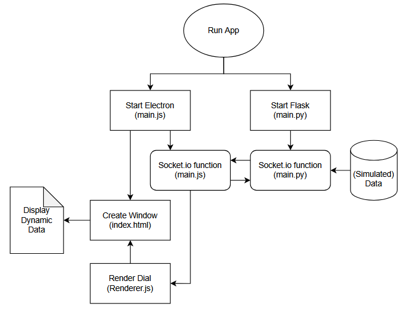

UD Jet Engine Simulation UI
Department of Computer Science, University of Dayton
Team 03: Andrew Reardon, Alex Ivary, Kyle Langenderfer, Ian Hemphill
Repository for the UDayton Jet Engine Simulation User Interface development.
Latest update: 3/13/2025
Sponsor: Billy Dolan
Billy is currently an Aerospace Engineering Graduate student at the University of Dayton, having graduated in Spring 2024.
He currently helps out with the jet engine simulation program as a specialist, as well as taking the time to re-engineer programs in order to improve
the current application used to test jet engines. His LinkedIn profile can be found
here.
Task Description
We have been tasked with creating and designing a complete user interface for the current jet engine simulation application that is being used
by Dayton's School of Engineering. The requirements are as follows:
- Home Page
- Log Data Page
- Show Real Values Page
- ECU Parameter Edit Page
- GSU Test Functions Page
Design Overview

Technical Details
We are using the following tech stack to achieve real-time updates and communication:
- Electron
- Python
- Socket.io
- Flask Server
- Axios
Previously Completed
- Working prototype test app
- Demo dial to display real-time updates in data
- Customized buttons and menu/tool bar
- Resizable application window
- Exit button to fix full-screen issues
Current Progress
- Successful serial connection and communication with Arduino test units
- Pages with functional dynamic UI Elements (dials, gauges, sliders, data output)
- Working loading page that waits until app is initialized
- Functional data logging
- Start of implementation of Python backend functions
- Dark/Light mode function (paused for prioritization)
- Working COM Settings menu with auto-detect and baud rate selection
- Database framework using SQLite (in progress)
Next Sprint
- Continue implementation of Python backend functions into frontend
- Remove unnecessary JavaScript from previous test code
- Additional front-end development to meet requirements
- Achieve successful serial data communication for UI elements
- Finalize database implementation
Demo
A link to our demo video can be found
here.